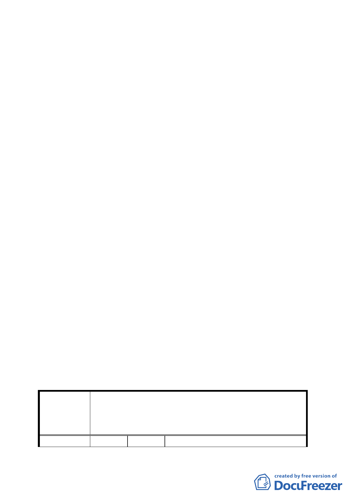

空間」、「地面人行通道」及「挑空室內開放空間」三項容積
獎勵；另本案基地開發對周圍交通、公共設施容受力等衝擊
分析，請臺北市都市設計及土地使用開發許可審議委員會審
查本案時整體審視。
二、 本案除應修正及增列以下規定外，其餘依本府本次會議所送
修正計畫書內容通過。
（一） 計畫書第 12 頁圖 7「地面人行通道」應標示連慣性，
至於汽車出入口不予標示，於都市設計審議時討論。
另將車行人行系統融入設計構想示意圖(圖 7)，圖 8
請予刪除。
（二） 「廣場式開放空間」獎勵範圍，除應於都市設計準則
中註明不得設置任何形式阻攔式設施供公眾使用外，
另應載明供作自宅住戶使用空間部分，不得計入獎勵
範圍。
（三） 「挑空室內開放空間」獎勵範圍除計畫書第 15 頁所述
維持 24 小時開放供公眾使用外，應特別註明包括住戶
及辦公以外任何人，以茲明確。
（四） 所申請好好看獎勵範圍，除於計畫書中應明確載明開
發者確實執行後續維護管理之責外，並不得以任何情
形改變其開放性。
（五） 為利於申請好好看容積獎勵之後續規範，請於計畫書
「其他」項內，比照其他好好看申請案例增列「本案
若無法依臺北好好看規定時程申請建照及開工，應回
復原都市計畫」等文字敘述，以為周延。
三、 公民或團體所提意見審決如後附綜理表。
臺北市都市計畫委員會公民或團體所提意見綜理表
變更臺北市大安區懷生段 1 小段 931 地號等 20 筆土
案
名
地之第三之二種住宅區為第三之二種住宅區(特)暨
修訂第三之一種住宅區(特)土地使用分區管制規定
細部計畫案
編
號1
陳情人 吳正憲、黃雅雯、彭文榮、黃子亮、
- 25 -